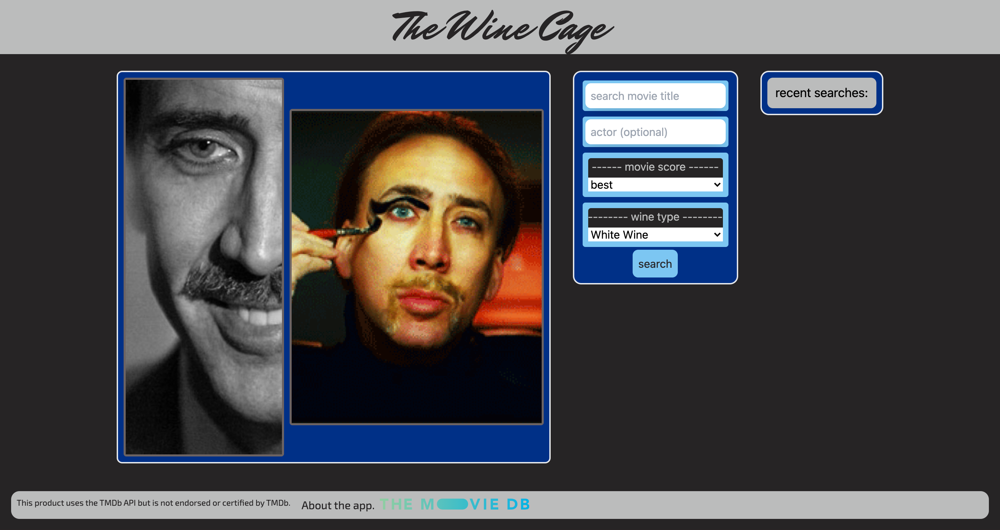

The Wine Cage
Shot-Map

My name is Peter Stenger and I am a full-stack web developer based in Milwaukee, Wisconsin. I believe that the success of any venture can be attributed to their accessibility and originality of their web presence. As programming languages continue to advance, I plan to advance with them. Staying up to date with drastic changes and advancements is one of the main skills required in order to be successful in this industry. Possessing leadership qualities as well as strong communication, teamwork attributes, and critical thinking skills, I am able to adapt and change to any situation in order to be successful. I plan, in the near future, to become an important part of a solid web development team, as well as becoming a strong leader/project manager.
When designing applications for the web and the general public, there are a lot of different variables to consider, and I believe that relying on the same thinking skills for all of them is not the best approach for building and sustaining a successful web application. Almost all of the concepts I know had come from the Full-Stack Web Development certificate program from the University of Wisconsin, to which I will graduate in August of 2021. Some of my strongest skills currently include; HTML, CSS, .git, and Js.
Statement of Originality and Confidentiality: This portfolio is the work of Peter Stenger. Please do not copy any of the contents without permission.